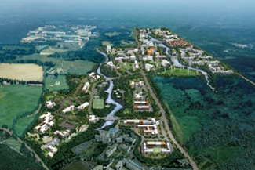
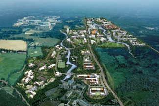
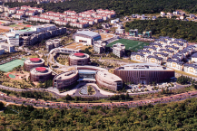
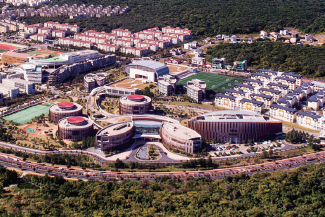

국제자유도시 개요
- Home
- 일반현황
- 행정·경제
- 국제자유도시 개요
제주국제자유도시
국제자유도시란?
"국제자유도시"란 사람ㆍ상품ㆍ자본의 국제적 이동과 기업활동의 편의가 최대한 보장되도록 규제의 완화 및 국제적 기준이 적용되는 지역적
단위를 말한다.“
- 제주특별자치도 설치 및 국제자유도시 조성을 위한 특별법 제2조(정의)
제주는 대한민국, 중국, 대만, 홍콩, 러시아 및 일본 등 동아시아의 주요도시와 인접한 지정학적 위치, 청정 자연과 수려한 자연경관을 기반으로 한 우수한 관광산업 인프라, 본토와 격리되어 특별법 적용에 용이한 조건을 보유하고 있어 대한민국 국제자유도시 모델 구현의 최적지로 평가받았습니다.
이에 대한민국 중앙정부는 1998년 국제자유도시 추진 방침을 표명하고 2002년 제주를 국제자유도시로 지정하였습니다. 제주국제자유도시는 사람, 상품, 자본 이동의 자유와 기업활동의 편의를 최대 보장하는 개방화, 자유화 정책의 시범지역으로 개발함으로써 국가경쟁력을 확보하려는 국가발전전략의 요충지이자, 21세기 동북아시아의 중심 도시로 육성하고 발전시키고자 하는 제주의 마스터 플랜입니다.
연혁
-
2017
- 3월 - 「제주국제자유도시 제2차 종합계획 수정계획」 고시
-
2012
- 4월 - 헬스케어타운 착공
- 1월 - 「제주국제자유도시 제2차 종합계획」 확정 고시
-
2010
- 3월 - 제주첨단과학기술단지 준공
-
2009
- 6월 - 영어교육도시 착공
-
2007
- 12월 - 신화역사공원 착공
-
2003
- 2월 - 「제주국제자유도시 종합계획」 고시
-
2002
- 5월 - 중앙정부가 제주국제자유도시 조성 지원을 위한 전담기구로써 국토교통부 산하로 제주국제자유도시개발센터(JDC)를 설립
- 4월 - 「제주국제자유도시특별법」시행령 개정 및 시행으로 국제자유도시의 법적 기반 마련
- 1월 - 「제주도개발특별법」을 「제주국제자유도시특별법」으로 전면 개정 및 공포
-
1999
- 9월 - ‘99. 9월부터 2000년 6월까지 건설교통부 주관으로 제주국제자유도시 타당성조사 연구용역을 미국 존스 랑 라살르사에서 실시
-
1998
- 9월 - 김대중 대통령 제주 순시 시 제주를 관광·첨단지식산업·물류·금융 등 복합기능의 도시개발을 통하여 제주의 특성과 잠재력을 살려 특색 있게 개발하는 국제자유도시 추진 방침 표명
주요 제도
| 「사람」의 자유로운 이동 | 「상품」의 자유로운 이동 | 「자본」의 자유로운 이동 |
|---|---|---|
| 무비자(No-Tax) 정책, 외국인력 장기체류 허용, 출입국절차 간소화 등 | 수입자유화, 무관세(No-Tax) 등 무역장벽 완화 | 외환거래 자유화 등 |
주요 프로젝트
관광, 교육, 의료, 1차산업, 첨단지식산업 등을 제주의 미래 핵심산업으로 육성하기 위한 기반조성 및 투자유치 프로젝트-
 
제주첨단과학기술 단지

제주첨단과학기술 단지
-
  제주영어교육도시
-

 신화역사공원
신화역사공원
-
 헬스케어타운
헬스케어타운